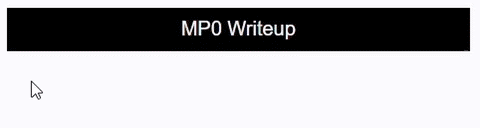
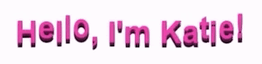

MP0 Writeup
Overview
I broke up MP0 into several steps to complete the project:
- I worked on some basic style and aesthetics for the main page. I changed the background and text colors in the index.css file, and rewrote the text to represent what I wanted my portfolio to say. I also changed the font of the text.
-
I created some tabs at the top of the home page to link to other
pages, including Home, About Me, Cheatsheets, and MP0 Writeup.
Then I added my first CSS transition, which was to make the tab inverse
colors when the user hovers over it with their mouse. Originally
I ran into some issues with creating my CSS transition. When
trying to make the tabs inverse colors, I wanted it to go from a
black background with white text to a white background with black
text. However, in doing this I accidentally created a black
background for the images as well:

- I created new HTML and CSS files in VSCode to customize those pages, then customized them through the code.
- In the "About Me" page, I wrote a description about myself and added an image of myself to the page.
- In the "Cheatsheets" page, I pasted the code snippet I used to create my CSS transition, which was the tab bars changing colors when hovering over them with the mouse. I changed the font of the code the match the font usually used when coding, called Courier.
- Then, I wrote up the MP0 writeup, describing each step along the way, an issue encountered while working on this project, my CSS transition I used, and ideas I might implement in the future.
- After I completed this, I decided to go back and create another CSS transition where I would make the intro (where it says "Hello, I'm Katie!") pink with shadows under the letters and have all the letters bouncing.
- Lastly, I am now updating the rest of my project to reflect these changes, such as in my "Cheatsheets" page and here in the "MP0 Writeup" page.
Issue
An issue I encountered while working on this assignment was getting my first CSS transition to work properly in the beginning. I wanted to make the tabs at the top of the page inverse colors when the user hovers over it with their mouse (originally black background with white text, then white background with black text). However, when I tried to implement this it created a black background for the images on my page as well, which is not what I intended to do.
I realized that the reason it was affecting the images as well as the tabs was because in my CSS code, I was putting all these changes under the "a" tag, while both my tabs and images were under "a" tags.
To fix this issue, I added "class="nav-container"" inside the "a" tag for the navigation bar, but not to the images in the HTML file. Then I changed the CSS to say ".nav-container", ".nav-container:hover", and ".nav-container:focus", rather than "a", "a:hover", and "a:focus", and this finally solved the issue.
Currently, another issue I am having is figuring out how to create a gif of my CSS transitions to include in the MP0 Writeup, but I have not yet figured out how to solve this issue (although presumably I will have by the time I turn in this assignment).
CSS Transition
I decided to create two CSS transitions for this project.
My first CSS transition was to make the tab change colors when the user hovers over it with their mouse.
The reason I chose this CSS transition was because I already have to make tabs anyway to link to the other parts of the site, so I decided to just make the tabs a little more aesthetic and fun, as opposed to some simple links at the top of the page.
To make this work, I set the original color in the HTML to be black tabs with white text for the words, wrapping the code with "nav" and "nav-container". Then in the CSS for these tags I just assigned "".nav-container:hover" and ".nav-container:focus" to new colors (I chose pink text with a white background to match my introduction phrase), and that was it!
Originally I ran into some issues with creating my CSS transition. When trying to make the tabs change colors, I wanted it to go from a black background with white text to a white background with black text (This was before I decided to make it pink text with a white background). However, in doing this I accidentally created a black background for the images as well, as shown up above in #2 in the "Overview" section.
Here is a gif of the transition in action:
My second CSS transition was to make my introduction on index.html (the part that says "Hello, I'm Katie!") pink with shadows and to have the letters be continuously bouncing on the screen.
I decided to do this CSS transition because my first one was more for functionality of the site, but I wanted to do another one that was just for fun and to make the site a little more interesting and fun.
This one was a lot more complicated than the first one. I had to separate each character in the phrase in the HTML code and give them all a separate tag so that I could customize them differently in the CSS and make them bounce at different times so the entire phrase wasn't all one big bounce. Then I adjusted things like the text color and shadows, and then I implemented the bounce by adding a "@keyframes bounce" section in the CSS that would set how big the bounce would be and stuff like that. I set the bounce to be a 1 second transition with an ease so that it slows it down a little and makes the transition seem more gradual.
Here is a gif of the transition in action:
Ideas and Future
Here are some ideas and features I might like to add to my site in the future:
- Adding another CSS transition on my home page for fun, potentially a gif next to my introduction or having my introduction move when the user hovers over it.
- Putting some more information in the "Cheatsheets" tab, such as some shortcuts or tips I found useful that I may want to refer to later on.
- Currently under the "Projects" section on the home page I just have the original images and links that were provided, but as I continue to build and work on my portfolio I'm going to remove those and add actual projects that I'm working on or have completed.